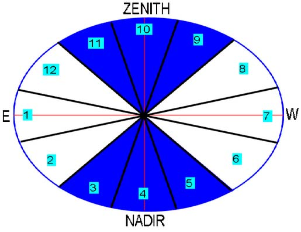
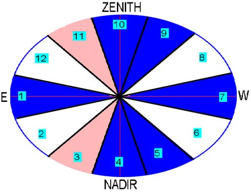
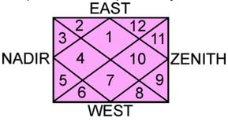

Origin And Meanings Of Horoscopic Houses
There are 12 houses in horoscopes in Indian, Chinese, European and ancient Egyptial and Mesopotamian horoscopes. Names of these houses are also highly similar, pointing towards some common origin of astrology. There is a dearth of external evidence for tracing this common origin, but internal evidences are galore. Let us discuss some.
According to Surya-siddhanta (siddhānta, the bedrock of mathematical portion of ancient Indian astrology), LAGNA (ascendant) is defined as that point of the ecliptic which touches the eastern horizon at any given moment. Other eleven mansions are defined with respect to Lagna. Hence all mansions are parts of the ecliptic. Since the ecliptic is elliptical, all twelve mansions should be unequal. Therefore, the mansions of Indian astrology should be reckoned from Bhāva-chalita and not from the (Rasi chart or) Rāshi-chakra.
The Rāshi-chakra is a circular disc running along the zodiac with all 12 Rāshis being exactly equal to 30 degrees, while the measures of twelve bhāvas (dvādash-bhāva) change with time and place ; that is why it is called Chalita (i.e., movable or changeable). It takes some time and energy to compute the bhāva-chalita. Exact method of computing the bhāva-chalita according to traditional Indian Siddhāntas has been long forsaken and forgotten. An overwhelming majority of astrologers use the Rāshi-chakra for making predictions for saving time; most of not-so-learned astrologers do not even know that Rāshi-chakra should not be directly used for making predictions, its only use is to determine places of exaltation (uchcha), debility(neecha), friendship or enmity among planets, heliacal setting (asta), aspects (drishti) and similar phenomena. In both Rāshi-chakra and Bhāva-chalita, lagna is always placed at the centre of first mansion. But in Rāshi-chakra, successive mansions are computed by merely adding 30 degrees to the lagna, whereas in the bhāva-chalita bhāvas are reckoned independently.
In the picture below, some bhāvas make larger angle with the centre while others make smaller angles due to ellipcity of the ecliptic (in this picture bhāvas 1 or 7 are shown as being less than bhāva 10 or 4, but at other times the reverse may be true). It is because of the Keplerian law of equal area in equal time : all bhāvas must have equal areas and not equal angles. Europe (Johannes Kepler) discovered this law much later, but Indian astrologers possessed the mathematical method of computing bhāvas of the ellipse millenia before Kepler. Method of computing declination of the Sun was also well known, which is also an attribute of ellipse. Rectified path-lengths of epicycloidal and hypocycloidal paths of planets and moon is given in Surya-siddhānta, while Europe discovered it in modern times.
Twelve Bhāvas were conceived according to a well designed logical plan which has never been elucidated in any ancient or modern treatise of any country. Here, some of these ancient secrets are being explained for the first time. As pointed above, Lagna is that portion of the ecliptic which lies in the east. The entire house of Lagna is approximately 30 degrees (plus or minus few degrees), half of it remains below the horizon (see Medini kundalis in other pages of this website). Tenth House (Dasham bhāva) lies at the zenith. Seventh House lies in the west, and Fourth House lies below the onlooker. Hence, Fourth House came to signify Land, Mother (Earth), Vehicle, which lie below. Tenth House signifies Father (God the Father or Dyaus-Pitr symbolised the Sky in Vedic and PIE-language) and glory. First House symbolises birth into this world, and therefore first house represents life, body, health,etc. Rebirth into body is the result of Kaama (libido), hence Seventh House represents Kāma. All twelve houses exhibit this cause-consequence relationship, as shown below :
| Cause - Consequence Relations Between Opposite Houses | |||||||
| House | Subject | Opposite House and its subject | |||||
|---|---|---|---|---|---|---|---|
| 1 rst | Body, life, health | 7 th : Kāma (libido), spouse : Body is a result of Kāma, moksha is a result of Nishkāma living. | |||||
| 2 nd | Wealth,Lord of death | 8 th : Death : Bhāva-2 symbolizes death and Bhāva-2 symbolizes its cause,i.e, Mārakesha and Wealth (aparigraha leads to moksha, i.e, permanent liberation from death and rebirth). | |||||
| 3 rd | Parākrama(valour, stamina, vigour) | 9 th : Fortune, religiousity : Fortune is a result of Parākrama. | |||||
| 4 th | Land, Mother | 10 th : Father,honour,career : 4th symbolizes land, 10 th gives honour, kingdom, etc. Mother-Father contrast between these two houses should be noted. | |||||
| 5 th | Knowledge(Vidyā) | 11 th : Income : Income is a result of worldly accomplishments. | |||||
| 6 th | Enemy,disease | 12 th : Expense, loss : Subjects of 6 th and 12 th houses have a cause-consequence relationship. | |||||
Thus, all twelve bhāvas can be grouped into six pairs having cause-consequence or contrasting relations. These six pairs can be further reduced to two contrasting divisions. Bhāva-10 lies towards the zenith. Adjacent to it are 9th and 11th houses. These three houses can be clubbed together as houses of 'Fortune,honour,rise,income'. There is close affinity in subjects of these houses. All symbolize 'RISE' towards the sky, which is the meaning of houses which lie towards the sky.
Similarly, 3rd and 5th houses are neighbours of 4th. These three houses symbolozes bases or causes of the subjects of sky-houses(9,10,11). Vigour, land and knowledge provide the foundation upon which one may rise towards the sky and gain money or honour. Hence, 9-10-11 symbolize SKY or Protector (Fortune-Action-Income nurtures and protects like a father), and 3-4-5 symbolize EARTH or BASE or FOUNDATION. Both triplicities have a strong mutual cause-consequence relation.
In a similar manner, houses 12-1-2 and 6-7-8 form remaining two triplicities, both being detrimental. The malevolence of 6,8 and 12 are well known. 2nd house is the cause of death and determines the lordship of death. But it is also the house of wealth and eyes, which strengthen bondage to this-worldliness and cause recurring death-rebirth cycles. 7th house is also the cause of death and bondage : Kāma(libido). Brihat-Parāshara-Horā-shāshtra (BPHS) clearly states that planets residing in 6-7-8 houses determine whether a person should go to heaven, hell or be reborn into this world.
Horoscope is the result of actions of past lives. Sum total of all actions of all past lives do not contribute into the horoscope. Actions which bears results conducive for a birth into human specie join together, and if they overwhelm non-human traits, birth into human specie in ensured. Other actions remain dormant, bearing no result in the present human life. But if a human being accumulates sins, these bad acts will combine with similar dormant acts and may cause a non-human rebirth if such acts surpass human traits. If Saturn and Mercury reside in 6-7-8 houses and auspicious planets do not reside there, the person should go to Hell. Hell has two meanings in Indian tradition. One hell is birth into some animal or insect form. Another hell is real hell : torment without getting any birth at all, till the sins are purged.
The afore-mentioned four triplicities are repeated in the plan of Aaroodha-padas as describrd in BPH. Houses 12-1-2 and 6-7-8 are never allowed to become ārudha-padas; only 3-4-5 and 9-10-11 can become padas. Pada means the steps or means through which a work is done. If the means is bad the task can not be accomplished. Hence only good houses are allowed to become ārudha-padas.
3rd and 11th houses were found to be auspicious in many respects, and 1rst and 7th houses were auspicious in a majority of instances. Hence, in the end of Kārakādhyāya (BPH), Sage Parāshara said that houses 2,3,6,8,11,12 were inauspicious. According to this classification, we can present the following modified picture of bhāva-chalita. The symmetry between upper and lower halves is remarkable.
A simplified view has been presented here. But it is sufficient to convince anyone that the concept of twelve mansions did not originate without any logical plan. Moreover, this overall plan behind the concept of Twelve Houses is based upon ancient Indian philosophy of the Vedic tradition. it is impossible to believe that that such a system was imported into India from some non-Vedic society. Nowhere in world we can find a society in ancient times which believed in such concepts which contributed in the evolution of the ideas behind Dvādash-bhāva, Kāma causing death, bondage and rebirth and renunciation of Kāma leading to emancipation; Sky symbolizing Father, Earth as mother, wealth as a companion of Killer (Mārkesha),etc.
This plan of horoscope was stylized into following form in remote antiquity, which is suggested by names like Kendra for Houses 1, 4, 7, 10 and Trikona for 5, 9, because Houses 1, 4, 7, 10 actually reside in the Kendra (central region) and Houses 5 and 9 actually are triangular (Trikona) in shape. Other designs for horoscope popular in India or elsewhere do not fit such definitions. This design of Kundalee (horoscope) is traditionally popular in the region which was known as Aryāvarta in ancient times, and is in consonance with definitions found in most ancient Indian treatises of astrology. The directional notions East, West, Zenith and Nadir is not used because it is not needed in horoscopic astrology. In national astrology we will discuss another type of directional design of zodiacal signs. In the left hand side picture, first house in the house of ascendant or Lagna.
Why 11L is Malefic ?
11L (= Lord of 11H or 11th house) is most malefic, but why?
4H, 8H and 12H form the Moksha Trikona : 4H is for real Sukha and wisdom, 8H is for secret knowledge and conditions relating to death, while 12H is for Moksha.
11H is 12th to 12H, hence Loss of Moksha.
11H is 8th to 4H, hence death of wisdom or real sukha.
11H is4th to 8H, hence base (aadhaar or bhoomi) of death and joy in death.
11H is 5th for 7H, hence intelligence for Libido &c comes from 11H.
6H is related to those traits in character which are conducive to or detrimental to Moksha (cf . D-30 below), hence its enemy is 6th to 6H which is 11H.
Therefore, 11L is worst in function, and placement in 11H is bad for auspicious planets, but good for malefics because malefics get boosted there and get monetary means to further the malefic instincts.
No other house and its lord is so bad for moksha. That is why 11L is worst malefic.
[ It is a crude summary ; details are complicated. ]
How to Deduce the Nature of 7H (7th Bhaava)?
BPHS chapter on Bhaavaadheesha-phalaadhyaaya throws ample light on various topics influenced by 7L (see there, I am not repeating those topics here, which are important).
7H is primarily the house of Kaama, which is the Cardinal Sin according to Gita. It is complimentary to Lagna, hence when the Ecliptic rises in the East (=Lagna )and shows rise of the native in this world, 7H shows setting of the Ecliptic and hence of Life in this world. That is why 8th house to 7H is the chief killer (maarakesha), and planets placed in 7H are also killer. Kaama Trikona is as a whole a bad trikona, 3L and 11L being always malefic, and benefic planets placed there become malefic, but 7H itself is not so bad because of its placement in Kendra. 7H of Kaama destroys all spiritual and secret knowledge because it is 12th to 8H and 8th to 12H of Moksha. 7H is 5th to 3H and 9th to 11H, all being part of Kaama Trikona, which means 3H and 11H provide means to fulfill Kaama (Paraakrama and Laabha help in Kaama). 7H itself is related to wealth, trade, etc (cf BPHS).
Special Meanings of Some Divisionals
Trinsaamsha (D-30)
Generally, D-30 is about Arishta, i.e., malefic events of life, such as accidents, diseases, attacks by enemies, etc. But there is one very important aspect of D-30 which is described in detail in BPHS (Brihat Parāshara Horā Shāstra) and is also confirmed by the above logic, but is completely ignored by astrologers. Read the verses related to D-30 in Stree-Jātaka-Phalādhyāya of BPHS, which deal with the character of native. 12H deals with Moksha, hence 6H is related to those traits in character which are conducive to or detrimental to Moksha, and therefore D-30 (which is 6 + 12 + 12) also dewals with similar themes, besides the general themes of 6H. Stree-Jātaka-Phalādhyāya deals with females, but same combinations in male horoscopes will apply for males.
-Vinay Jha